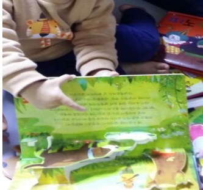
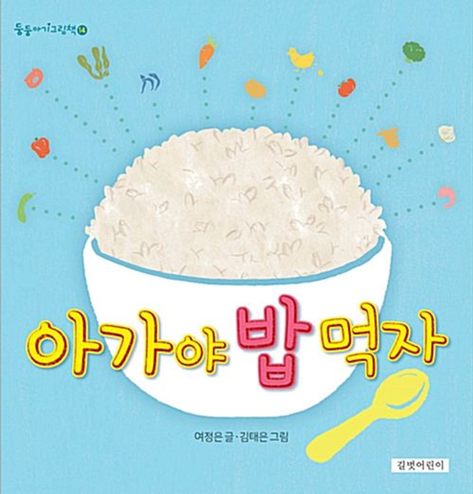
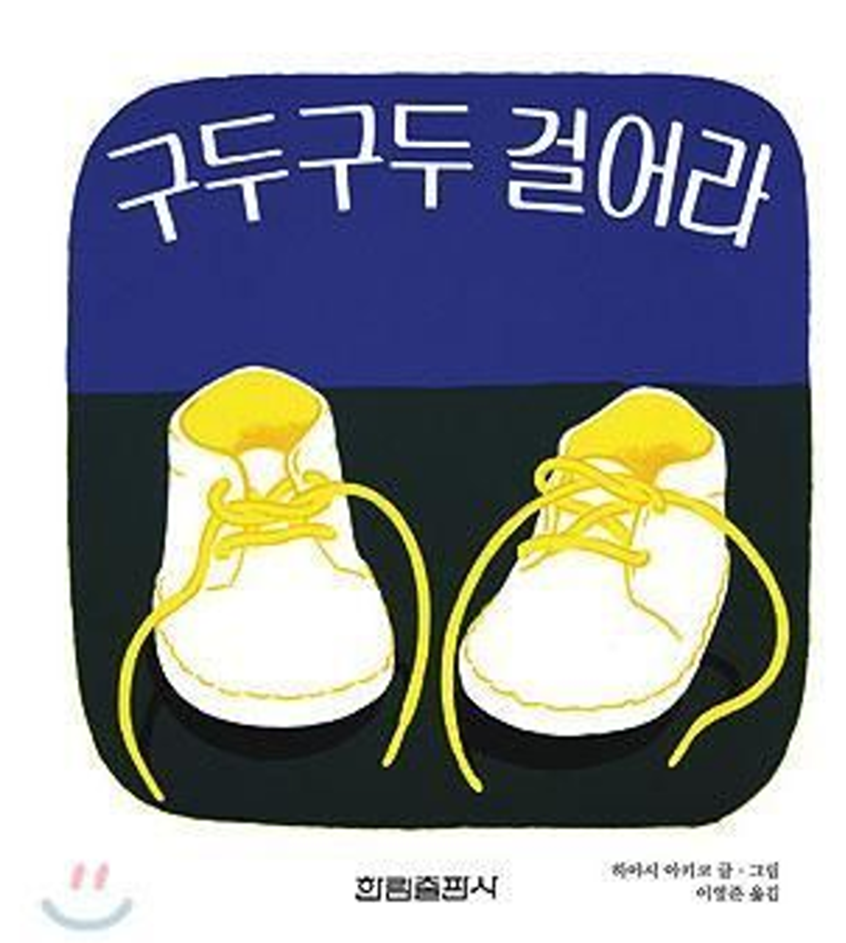
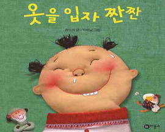

걸음마기 신체발달과 그림책의 의의
걸음마기는 돌이 지난 시기(1세~3세)이다. 신체발달과 함께 소근육이 활발해져 자유롭게 움직일 수 있으며 다양한 운동 능력을 발휘할 수 있다. 돌이 지나면서 신체적 이동능력과 언어능력으로 자아개념이 생기기 시작하므로 일상생활 속에서 접하는 사물이나 인물의 개념 및 정보를 획득한다.
신체발달을 살펴보면 다음과 같다.
두발로 서서 아장아장 걸ㄹ을 수 있다. 대근육운동기능의 발달로 자신의 몸을 이동하면서 사물에 호기심을 나타낸다. 어떠한 자극에 좀 더 적극적으로 호기심을 발휘하거나 의도적인 행동을 시도한다. 또한 소근육 운동기능이 발달하여 손가락질하거나 장난감 및 물건을 집는 조정하는 기술이 늘어난다. 즉, 눈과 손의 협응작용이 이루어진다는 것이다.
13~15개월 경에는 몸의 균형과 조절능력을 키울 수 있도록 걷고, 2~3개의 작은 블록을 쌓을 수 있다. 18개월 이후면 혼자 걷기를 할 정도로 자연스럽게 달리기도 할 수 있으며, 24개월에는 대소근육이 더욱 민첩하게 발달되어 달리기, 공차기, 공 던지기, 두발 뛰기 등 운동 기술을 나타낸다. 걸음마기는 청각， 시각， 촉각 등의 감각기관과 운동기능의 협응을 통한 신체적 활동이 급속하게 이루어진다.

이 시기 습관 형성을 위하여 배변하기, 식사하기, 옷 입기, 잠자기 등 자조행동을 쉽게 형성하도록 진행해야 한다. 일반적으로 소근육의 발달로 집게손가락과 엄지손가락으로 책을 다루면서 직접 넘겨보면서 즐길 수도 있다. 그러다가 24개월 정도 걸음마기를 마칠 무렵에 양육자에게 부쩍 매달리고 과민하게 반응하는때가 생긴다.
특히 동생이 태어나면 대소변을 다시 못가리게 되는 퇴행현상이 나타나 당황하게 된다. 하지만 이런 의존성은 정서적 재충전 과정에서 일시적으므로 그림책을 통하여 인지적, 정서적 능력의 대상항상성을 성취하도록 해야 할 것이다. 그림책을 한 장씩 넘기기도 하지만 손가락으로 끼적이기, 스티카 붙기와 떼어보기 등 감각적 활동을 놀이처럼 즐길 수 있다.
걸음마기의 신체발달에 적합한 그림책 예를 들면 다음과 같다.
‘아가야 밥 먹자’는 먹음직스러운 흰 쌀밥이 콩밥, 주먹밥, 볶음밥, 김밥 등으로 나타나 다양한 맛과 모양과 색깔로 오감을 자극하며 식욕을 느끼도록 한다.

‘구두 구두 걸어라’는 세상을 아장아장 걷기 시작하면서 발보다 마음이 앞서 나가는 아기의 서툰 걸음을 구두로 의인화시켜 단순한 그림이 경쾌하게 표현되었다.

‘옷을 입자, 짠짠!’ 즐거운 놀이를 하듯 자연스럽게 옷 입는 순서와 방법을 배우는 생활 습관을 경쾌한 운율감이 넘쳐나는 반복적인 글과 의성어와 의태어를 풍부하게 곁들여 즐거움은 물론 익살스러운 표정과 행동을 따라하고 싶다는 생각과 자신감을 심어주고 성취감을 느끼게 해준다. 머리, 배꼽, 다리, 그리고 허벅지 등 신체 명칭에 대해서 자연스럽게 익힐 수 있도록 열었다 닫았다 하는 그림책의 특징에 따라 협응능력을 매우 효율적으로 발휘시킨다.

걸음마기에 바람직한 그림책은 다음과 같다.
딱딱한 판지로 만들어진 보드북(board book), 그림의 일부분을 헝겊, 사포, 털 등으로 처리된 촉감책, 책을 펼치면 입체적인 모양으로 펼쳐지는 팝업책(pop-up book), 그림의 일부분이 덮개로 가려져 이야기 진행할 때 덮개를 열어가며 확인하도록 들춰보기책(lift-the-flap book) 등 일상생활에서 접할 수 있는 짧은 문장으로 구성된 책이 좋다.
내용으로 친숙한 사물과 동식물의 그림과 이름이 있는 그림책, 가족과 수면 및 대소변 등 생활습관이 담긴 그림책, 의성어와 의태어 단어나 문장이 많이 사용된 그림책, 반대 개념이나 대조 개념이 쉽게 표현된 그림책, 창작동요 및 전래동요의 운율이 담기 그림책, 아름다운 색상의 그림이 있는 책, 한번에 읽을 수 있는 양의 쪽수를 가진 책 등 이야기가 대체로 짧으면서 내용을 잘 이해할 수 있는 그림책이 바람직하다.
출처 : 김동례, 권순황, 선애순(2018). 아동문학. 공동체.
2023.02.08 - [문학] - 영아기 적절한 그림책 - 정서 및 감각발달에 영향
영아기 적절한 그림책 - 정서 및 감각발달에 영향
갓 태어난 신생아도 정서를 조절하기 위한 전략을 사용할 수 있는데， 4~6개월이 되면 영아는 유쾌하지 않은 자극에 대해 자신의 얼굴을 돌리거나 눈을 감기도 한다. 생후12개월 동안 영아의 정
think-sis.co.kr